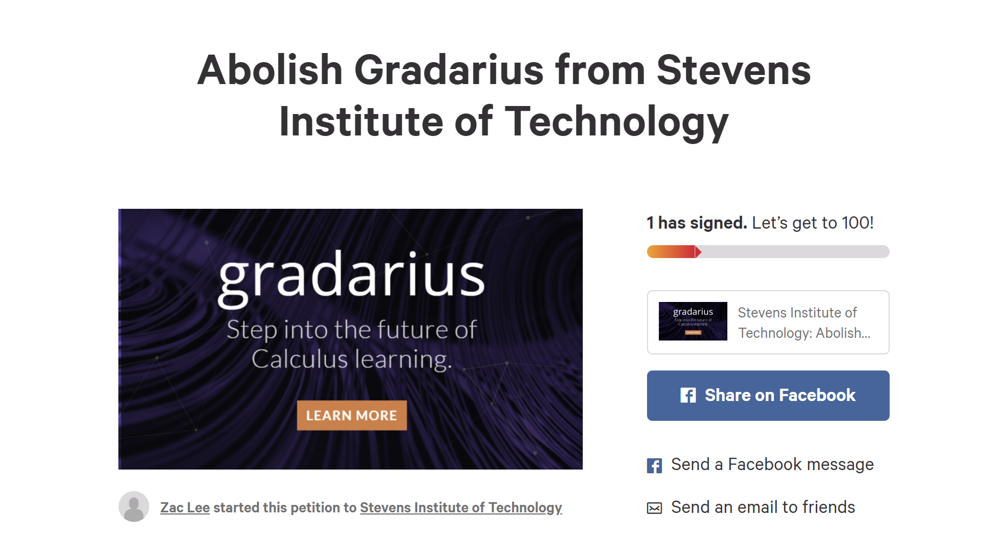

Change Stevens's Fate!
With your help, we can finally bury Gradarius once and for all, under the tears of students and the ashes of its software. Reach out to students at Penn State University, for they also struggle in the unfortunate circumstances Gradarius brings.
All you have to do is sign this Change.org petition to really get things started
Change Your Fate!
Before you lose hope on all of humanity because of Gradarius's disgrace, don't forget that you can always get some help from professionals. There is always someone willing to help in CAPS (Counseling & Psychological Services) in the 7th Floor of Howe. The hours are as follows:
- Monday-Friday: 9AM-5PM
- Tuesday 5PM-7PM by appointment only
Appointments are made in person from 9AM-5PM on weekdays, or by calling 201-216-5177 Be wary that they cannot be made over the CAPS email, but you can still contact that email if you need assistance psychologically recovering from the tortures of Gradarius.